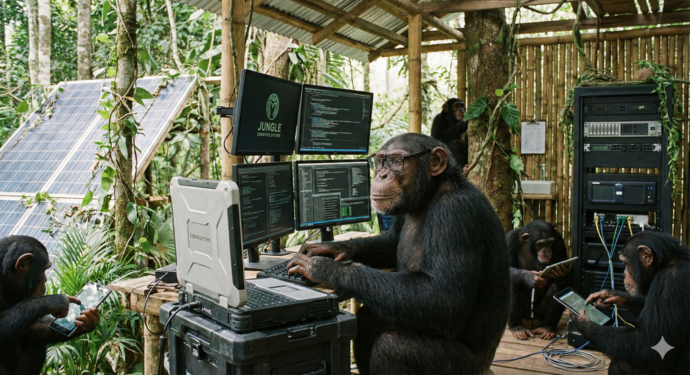

소프트웨어 공학 (Software Engineering)  2025년 현대 소프트웨어 개발을 위한 전략적 프레임워크 지속적 통합 및 배포 지속적 통합 및 배포 CI/CD n8n 오픈 소스 자동화 도구 n8n 도메인 주도 설계(DDD) DevSecOps 소프트웨어 문서화 git 소프트웨어 조직 플랫폼 엔지니어링 견고한 소프트웨어 관점 지향 프로그래밍(AOP) 소프트웨어 공학 트렌드 오라클: AI 주도 개발을 위한 해답